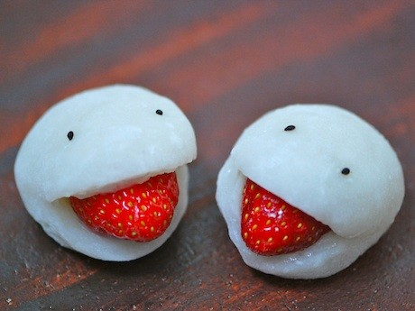

Японская сладость дайфуку
Описание
Дайфуку (дайфукумоти) – это традиционные японские сладости вагаси, представляющие собой небольшие рисовые лепешки с начинкой из сладкой бобовой пасты или дыневой пасты с цельными фруктами. Интересно, что дайфуку дословно с японского языка переводится - как большая удача.
Ингредиенты
- Рисовая мука – 200г
- Сахар – 60г
- Вода – 150мл
- Бобовая паста анко – 120-150г
- Клубника, другие фрукты(по вкусу) – 6 ягод
- Картофельный/кукурузный крахмал – немного, для присыпки
Рецепт

Для начала промойте и просушите ягоды, если Вы решили использовать сухофрукты, то замочите их на 8-10 минут в теплой воде, чтобы они набухли. Затем разделите готовую бобовую пасту анко на 6 равных частей и скатайте в шарики. Как приготовить анко пасту, Вы можете подсмотреть в одном из этих рецептов:«Бисквитные булочки дораяки с начинкой», «Японский сладкий пан по имени ан-пан!». Начинка готова, теперь переходим к приготовлению рисового теста для наших дайфуку.
Первым делом подогрейте 150 мл воды в миске и разведите в ней сахар. После дайте чуть-чуть остыть сиропу, чтобы он не был горячим. Затем выложите в отдельную миску 200 грамм рисовой муки. И помешивая, влейте получившийся сироп. Теперь поставьте рисовое тесто в микроволновую или обычную печь на 2 минуты. После тщательно перемешайте тесто и поставьте обратно в печь, до тех пор, пока оно не станет подниматься и приобретать прозрачный цвет. Когда тесто надуется и станет густым, достаньте из печи и помешайте деревянной ложкой или лопаткой.
Возьмите металлический поднос или другую плоскую посуду, которая не боится горячего, и чуть присыпьте дно картофельным или кукурузным крахмалом. Также посыпьте крахмал на руки для того,чтобы было легче выложить получившееся рисовое тесто на поднос или блюдо. Затем разделите рисовое тесто на 6 частей (делайте это осторожно, чтобы не обжечь руки о горячее тесто) и образуйте плоские круглые лепешки, посыпая их крахмалом, чтобы они лучше отлипали от рук и принимали нужную форму.
Ниже описанный процесс нужно выполнить в быстром темпе, пока тесто горячее и тягучее (гибкое)!!!
Возьмите выбранную Вами ягоду и один анко шарик (бобовая паста). Сначала вдавите ягоду в анко шарик, а затем растяните пасту вокруг ягоды. Теперь поместите начинку в виде шарика - посередине рисовой круглой лепешки. И по тому же принципу, растяните рисовое тесто вокруг начинки, образуя готовые шарикидайфуку. Затем аккуратно выложите все полученные шарики дайфуку на поднос или блюдо швами вниз, чтобы все японские сладости выглядели особенно красиво и присыпьте сверху крахмалом.
Накройте японские сладости дайфуку сухим полотенцем (оно убережет сладости от засыхания и образования корки) и дайте остыть. Сладости будут остывать примерно в течение 2 часов.
Друзья, вот и вкусные дайфуку готовы. Советуем к японским сладостям подаватьяпонский зеленый чай или белый чай, а также сладкое слововое вино.
Приятного аппетита!
Галерея
{kind=link}
{kind=link}
{kind=link}